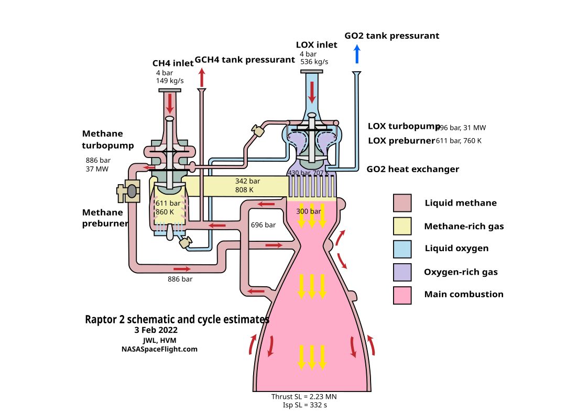

Raptor non è un Merlin ingrandito. Il cambiamento riguarda propellenti e soprattutto il ciclo con cui si alimenta la camera di combustione. Il motore deve spingere, ma deve anche portare metano e ossigeno a pressioni sufficienti per entrare nella camera. Le pompe richiedono energia, e il modo di ottenerla modifica prestazioni, temperature, componenti e difficoltà operative.
Prima della fiamma ci sono le pompe
In un grande motore a liquidi, la pressione della camera non può essere raggiunta affidandosi soltanto a serbatoi leggermente pressurizzati. Le turbopompe accelerano i fluidi e aumentano la pressione. Una turbina aziona la pompa usando un flusso di gas. La domanda progettuale è come produrre quel gas e che cosa farne dopo che ha compiuto il lavoro.
Un ciclo a generatore di gas usa una parte dei propellenti per alimentare la turbina e scarica quel flusso separatamente dalla camera principale. Un ciclo chiuso recupera il contributo del flusso nella combustione principale. Questo può migliorare l’utilizzo dei propellenti, ma impone requisiti più severi al percorso che li deve portare fino alla camera.
Che cosa significa full-flow
Nel ciclo a combustione stadiata a flusso completo, i due propellenti attraversano circuiti con prebruciatori e turbine prima della combustione principale. Un prebruciatore lavora con miscela ricca di combustibile, l’altro con miscela ricca di ossigeno. I gas risultanti azionano le turbine e vengono poi portati alla camera, dove la combustione si completa.
Il vantaggio concettuale è distribuire il lavoro su flussi importanti, invece di ottenere tutta la potenza della pompa da una piccola quantità di gas estremamente sollecitata. Non significa che i componenti siano freddi o facili da realizzare. Un ambiente ricco di ossigeno caldo pone problemi specifici ai materiali; pressioni, tenute, transitori e avviamento restano molto impegnativi.


Una tecnologia con precedenti di ricerca
SpaceX non inventò dal nulla il principio full-flow. Il dimostratore IPD, sviluppato nell’ambito di un programma congiunto NASA e Air Force, aveva affrontato questo ciclo con propellenti differenti. Riconoscere il precedente non riduce il lavoro Raptor: un dimostratore a terra e un motore che deve essere prodotto e usato in volo rispondono a livelli di maturità diversi.
Il contributo industriale riguarda la capacità di rendere il ciclo parte di un veicolo reale, con avviamenti ripetuti, regolazione, integrazione e una serie di motori. Dimostrare una condizione di funzionamento non significa aver risolto tutte le condizioni fra avviamento e spegnimento.
Perché metano
Il metano offre un compromesso differente da cherosene e idrogeno. È un fluido criogenico, quindi richiede serbatoi e procedure adeguate. La scelta si collega anche all’idea di produzione dei propellenti su Marte. Non bisogna però confondere una reazione chimica possibile con un impianto industriale già pronto in un ambiente lontano dalla Terra.
Un combustibile adatto al progetto non elimina manutenzione e problemi di combustione. La qualità del fluido, il comportamento degli iniettori e dei circuiti, i residui e i cicli termici devono essere verificati. “Pulito” non è una garanzia che il motore possa volare senza ispezione.
Uno schema utile, ma non ufficiale



L’avviamento è una manovra
Un motore non passa istantaneamente da zero alla propria condizione stabile. Devono essere preparati temperature, pressioni e flussi; le sequenze devono evitare condizioni nelle quali un componente riceva ciò che non può ancora gestire. La riaccensione durante il ritorno avviene inoltre dopo una storia di vibrazioni, accelerazioni e variazioni dei fluidi.
È qui che il motore incontra il veicolo. Una pompa può essere ben progettata e ricevere comunque condizioni sfavorevoli dal serbatoio. Una prova statica importante può non riprodurre ogni transitorio del volo. La parte rivoluzionaria di Raptor non sta quindi soltanto nel diagramma: sta nel tentativo di rendere ripetibile un ciclo complesso dentro una macchina destinata a tornare.
Fonti pubbliche e tracce
- NASA NTRS, Liquid Propulsion Systems. Principi e confronti fra cicli dei motori a propellente liquido.
- NASA NTRS, simulazione del dimostratore IPD. Precedente di ricerca sul ciclo full-flow, non motore Raptor né veicolo operativo.
- NASA NTRS, Evaluation of undeveloped rocket engine cycle applications to advanced transportation. Rapporto NASA-CR-184205 del 29 marzo 1990: architetture full-flow e loro requisiti. Fonte del principio, non disegno costruttivo Raptor.
- NASA NTRS, Experimental Evaluation of a Subscale Gaseous Hydrogen/gaseous Oxygen Coaxial Rocket Injector. Novembre 2002: ricerca sull’iniezione gas–gas con idrogeno e ossigeno. Non documenta la geometria dell’iniettore Raptor a metano.
- NASA NTRS, LOX/Methane In-Space Propulsion Systems Technology Status and Gaps. Aprile 2017: proprietà, sviluppi e problemi aperti della propulsione LOX/metano; non specifiche certificate SpaceX.
- NASA, New Rocket Engine Combustion Cycle Technology Testing Reaches 100% Power Level. Descrizione del dimostratore IPD a ossigeno e idrogeno: due prebruciatori e due turbine, con tutti i flussi destinati alla combustione principale. Non motore Raptor né programma operativo di volo.
- NASA Glenn, Rocket Laboratory — Space Propulsion. Ricerca sui propellenti e sul raffreddamento rigenerativo delle camere; riferimento del dettaglio termico separato nella tavola originale.
- Livingjw e HVM, schema stimato Raptor 2, Wikimedia Commons. Ricostruzione indipendente, non disegno SpaceX. CC BY-SA 4.0; revisione Nyq del luglio 2026.
- SpaceX, Starship. Pagina del costruttore: specifiche e obiettivi possono cambiare; consultazione 10 ottobre 2026.
Consultare l’atlante tecnico
Caratteristiche, schemi, configurazioni e limiti: Merlin · Raptor.